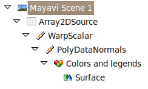
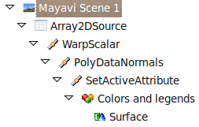

We have been getting a few questions on the enthought-dev mailing-list on how to represent an additional information on a surface with Mayavi, using color not given eg by the elevation. A recent post on his blog by Didrik Pinte shows the problem quite well:

This problem can be seen as taking a standard surf plot:

but coloring it with a different scalar than the elevation.
I would like to present two ways of solving this problem. First a very simple way specific to the exact problem, second a more complicated but quite generic approach.
Representing surfaces more complex than an elevation map
The first option is simply to use the tools that Mayavi’s mlab interface provide to represent surfaces that are not the particular case of an elevation plot. In our case, it is very easy to use the mesh function which can take the x, y, z positions of a grid giving the surface, but also an additional scalar value at these position:
# Create some data
import numpy as np
x, y = np.mgrid[0:10:100j, 0:10:100j]
z = x**2 + y**2
w = np.arctan(x/y)
# Visualize it
from enthought.mayavi import mlab
mlab.mesh(x, y, .05*z, scalars=w)
# Finally, add a few decorations.
mlab.axes()
mlab.outline()
mlab.view(-177, 82, 32)
mlab.show()
As you can see, this solution is really simple, and solves the problem.
A generic way of representing several scalar attributes with one visualization
If we think of the visualization problem as a way of representing two scalar values, ‘z’ and ‘w’, and a function of two others, ‘x’ and ‘y’, the above solution is not really satisfactory: the surf function really turns the scalar value ‘z’ in elevation (using a WarpScalar filter). We would like to be able to add an addition scalar value ‘w’ and turn it into color, just like ‘z’ is turned into elevation. The pipeline that is created by the surf function is the following:
The first element of the pipeline after the scene is the data source created for us by the surf function: it is a 2D array that contains the ‘z’ value as a scalar value. The ‘WarpScalar’ filter is applied, and transform that value into elevation. After that, a ‘PolyDataNormals’ filter is used to calculate normals, so as to have a smooth rendering, and finally, a ‘Surface’ module is applied to display the resulting elevation map as a surface, with a color reflecting the scalar value.
The way we can operate on two scalar values and turn them into elevation and color successively is to embed these two scalar values on the dataset, ‘z’ and ‘w’, and use a ‘SetActiveAttribute’ to control on which one the ‘Surface’ module is applied. This approach is much more powerful, because we can tweak the pipeline ourselves, and use any filter to replace the WarpScalar, and display the ‘z’ information (more on that below).
Here is how to do achieve a visualization with a similar look as above, but with two scalar values transformed successively in elevation and color:
###############################################################
# Create some data
import numpy as np
x, y = np.mgrid[0:10:100j, 0:10:100j]
z = x**2 + y**2
w = np.arctan(x/y)
###############################################################
# Visualize the data
from enthought.mayavi import mlab
# Create the data source
src = mlab.pipeline.array2d_source(z)
# Add the additional scalar information 'w', this is where we need to be a bit careful,
# see
# http://code.enthought.com/projects/mayavi/docs/development/html/mayavi/auto/example_atomic_orbital.html
# and
# http://code.enthought.com/projects/mayavi/docs/development/html/mayavi/data.html
dataset = src.mlab_source.dataset
array_id = dataset.point_data.add_array(w.T.ravel())
dataset.point_data.get_array(array_id).name = 'color'
dataset.point_data.update()
# Here, we build the very exact pipeline of surf, but add a
# set_active_attribute filter to switch the color, this is code very
# similar to the code introduced in:
# http://code.enthought.com/projects/mayavi/docs/development/html/mayavi/mlab.html#assembling-pipelines-with-mlab
warp = mlab.pipeline.warp_scalar(src, warp_scale=.5)
normals = mlab.pipeline.poly_data_normals(warp)
active_attr = mlab.pipeline.set_active_attribute(normals,
point_scalars='color')
surf = mlab.pipeline.surface(active_attr)
# Finally, add a few decorations.
mlab.axes()
mlab.outline()
mlab.view(-177, 82)
mlab.show()
The pipeline that is created is the following:
In the first part of the pipeline, the ‘WarpScalar’ filter is applied to the ‘z’ scalar value, whereas, due to the ‘SetActiveAttribute’ filter, the ‘Surface’ module uses the ‘w’ scalar value to display the color.
This pattern is very powerful, and can be used with other sets of filters or modules. The example of this pattern that we use in the Mayavi documentation is the following:

We use a ‘Contour’ filter to contour on the amplitude of a complex a field defined in the volume, and then switch to the phase to display the color. See the atomic orbital example in the Mayavi documentation for more details.